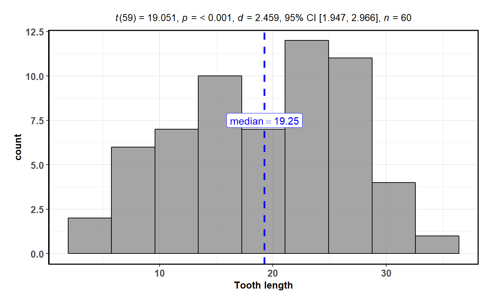

Histogram with statistical details from one-sample test included in the plot as a subtitle.
gghistostats(
data,
x,
binwidth = NULL,
xlab = NULL,
title = NULL,
subtitle = NULL,
caption = NULL,
type = "parametric",
test.value = 0,
bf.prior = 0.707,
bf.message = TRUE,
effsize.type = "g",
conf.level = 0.95,
tr = 0.2,
k = 2L,
ggtheme = ggstatsplot::theme_ggstatsplot(),
results.subtitle = TRUE,
bin.args = list(color = "black", fill = "grey50", alpha = 0.7),
centrality.plotting = TRUE,
centrality.type = type,
centrality.line.args = list(color = "blue", size = 1, linetype = "dashed"),
normal.curve = FALSE,
normal.curve.args = list(size = 2),
ggplot.component = NULL,
output = "plot",
...
)A dataframe (or a tibble) from which variables specified are to be taken. Other data types (e.g., matrix,table, array, etc.) will not be accepted.
A numeric variable from the dataframe data.
The width of the histogram bins. Can be specified as a
numeric value, or a function that calculates width from x. The default is
to use the max(x) - min(x) / sqrt(N). You should always check this value
and explore multiple widths to find the best to illustrate the stories in
your data.
Labels for x and y axis variables. If NULL (default),
variable names for x and y will be used.
The text for the plot title.
The text for the plot subtitle. Will work only if
results.subtitle = FALSE.
The text for the plot caption.
A character specifying the type of statistical approach:
"parametric"
"nonparametric"
"robust"
"bayes"
You can specify just the initial letter.
A number indicating the true value of the mean (Default:
0).
A number between 0.5 and 2 (default 0.707), the prior
width to use in calculating Bayes factors and posterior estimates. In
addition to numeric arguments, several named values are also recognized:
"medium", "wide", and "ultrawide", corresponding to r scale values
of 1/2, sqrt(2)/2, and 1, respectively. In case of an ANOVA, this value
corresponds to scale for fixed effects.
Logical that decides whether to display Bayes Factor in
favor of the null hypothesis. This argument is relevant only for
parametric test (Default: TRUE).
Type of effect size needed for parametric tests. The
argument can be "d" (for Cohen's d) or "g" (for Hedge's g).
Scalar between 0 and 1. If unspecified, the defaults
return 95% confidence/credible intervals (0.95).
Trim level for the mean when carrying out robust tests. In case
of an error, try reducing the value of tr, which is by default set to
0.2. Lowering the value might help.
Number of digits after decimal point (should be an integer)
(Default: k = 2L).
A {ggplot2} theme. Default value is
ggstatsplot::theme_ggstatsplot(). Any of the {ggplot2} themes (e.g.,
theme_bw()), or themes from extension packages are allowed
(e.g., ggthemes::theme_fivethirtyeight(), hrbrthemes::theme_ipsum_ps(),
etc.).
Decides whether the results of statistical tests are
to be displayed as a subtitle (Default: TRUE). If set to FALSE, only
the plot will be returned.
A list of additional aesthetic arguments to be passed to the
stat_bin used to display the bins. Do not specify binwidth argument in
this list since it has already been specified using the dedicated argument.
Logical that decides whether centrality tendency
measure is to be displayed as a point with a label (Default: TRUE).
Function decides which central tendency measure to show depending on the
type argument.
mean for parametric statistics
median for non-parametric statistics
trimmed mean for robust statistics
MAP estimator for Bayesian statistics
If you want default centrality parameter, you can specify this using
centrality.type argument.
Decides which centrality parameter is to be displayed.
The default is to choose the same as type argument. You can specify this
to be:
"parameteric" (for mean)
"nonparametric" (for median)
robust (for trimmed mean)
bayes (for MAP estimator)
Just as type argument, abbreviations are also accepted.
A list of additional aesthetic arguments to be
passed to the geom_line used to display the lines corresponding to the
centrality parameter.
A logical value that decides whether to super-impose a
normal curve using stats::dnorm(mean(x), sd(x)). Default is FALSE.
A list of additional aesthetic arguments to be passed to the normal curve.
A ggplot component to be added to the plot prepared
by {ggstatsplot}. This argument is primarily helpful for grouped_
variants of all primary functions. Default is NULL. The argument should
be entered as a {ggplot2} function or a list of {ggplot2} functions.
Character that describes what is to be returned: can be
"plot" (default) or "subtitle" or "caption". Setting this to
"subtitle" will return the expression containing statistical results. If
you have set results.subtitle = FALSE, then this will return a NULL.
Setting this to "caption" will return the expression containing details
about Bayes Factor analysis, but valid only when type = "parametric" and
bf.message = TRUE, otherwise this will return a NULL.
Currently ignored.
For details, see: https://indrajeetpatil.github.io/ggstatsplot/articles/web_only/gghistostats.html
# \donttest{
# for reproducibility
set.seed(123)
library(ggstatsplot)
# using defaults, but modifying which centrality parameter is to be shown
gghistostats(
data = ToothGrowth,
x = len,
xlab = "Tooth length",
centrality.type = "np"
)

# }